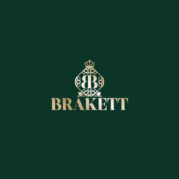

Trade Mark Journal No.2025/024 13 June 2025
UK00004173390 13 March 2025 (3,14,18,25)

- Class 3
- Room fragrances; fragrance preparations for rooms; reed diffusers for room fragrances; perfumed aerosols for rooms; room fragrances for domestic use; room fragrance preparations; room fragrance products; room fragrance sprays; perfumes; room perfumes for domestic use; preparations for refreshing the air as room fragrances; car perfumes; laundry perfumes; body perfumes; flower extracts as perfumes; essential oils for indoor fragrances; soaps; non-medicated soaps; bleaching preparations and other substances for laundry use; cleaning, polishing, degreasing and abrasive preparations; perfumery, essential oils; incense other than perfumes for personal use; body sprays used as deodorants and perfumes; perfumed bath salts; cosmetics; cosmetic preparations; hair cosmetics; decorative cosmetics; natural cosmetics; cosmetic oils; make-up preparations; beauty care cosmetics; non-medicated beauty preparations; argan butter for cosmetic use; cosmetic clay; clay masks for the skin; body creams [cosmetics]; gels for cosmetic use; oils for cosmetic use; wipes impregnated with cosmetic lotions; lotions for cosmetic use; skin cleansers [cosmetics]; dyes for cosmetic use; nail polish for cosmetic use; cotton wool and cotton buds for cosmetic use; cosmetic kits containing mainly mascara; lipsticks; eyebrow pencils; make-up; foundation and lip glosses; orange blossom water for cosmetic use; orange blossom water [herbal distillates]; non-medicated hair lotions; non-medicated dentifrices.
- Class 14
- Precious metals and their alloys; jewellery; precious and semi-precious stones; horological and chronometric instruments; bracelets [jewellery]; watch bracelets; identification bracelets [jewellery]; watch bracelets made of metal, leather or plastic; pearl bracelets; charms for bracelets; buckles for watch bracelets; bracelets made of precious metals; pendants; pendants [jewellery articles]; jewellery bags made of textile materials; empty jewellery bags; adhesive labels made of precious metals for textile bags; decorative boxes made of precious metals; works of art and decorations in the form of sculptures made of precious or semi-precious metals or stones; key rings with decorative trinkets or charms; cake toppers made of precious metals; decorative pins [jewellery]; works of art made of precious metals; works of art; decorations and sculptures made of precious or semi-precious metals or stones; personal ornament jewellery articles; ornaments made of precious metals; works of art and ornaments in the form of sculptures made of precious or semi-precious stones; ornaments made of precious or semi-precious stones, or of precious or semi-precious metals and their alloys, or coated with such stones; skin jewellery for cosmetic purposes; jewellery for cosmetic use; tattoo jewellery for cosmetic use; mock necklaces.
- Class 18
- Leather and imitations of leather; animal skins; luggage and carrying bags; umbrellas and parasols; walking sticks; whips and saddlery; collars, leashes and clothing for animals; bags; shoulder straps for bags; frames for bags; bag linings; structural frames for bags; handles for bags; clutch bags [handbags]; backpacks; handbags; souvenir bags; leather bags; mesh bags; luggage in the form of bags; handbags other than of precious metal; pet carriers [bags] made of leather and imitation leather; empty cosmetic cases; empty cosmetic pouches; empty cosmetic bags; empty vanity cases [not fitted]; pouches for makeup, keys, and other personal items; bags for makeup, keys, and other personal items; leather ornaments for mobile phones; leather ornaments for cell phones; wallets.
- Class 25
- Flip-flops; sandals; non-slip sandals for shoes; bandanas [scarves]; headbands [clothing]; stockings; sweat socks; non-paper bibs; non-paper sleeved bibs; berets; blouses; boas [chokers]; bodysuits [underwear]; hosiery; caps; barrettes [bonnets]; headgear; bathing caps; shower caps; boots; booties; shoe tips; suspenders; cover-ups; corset covers; boxer shorts [shorts]; swim trunks; camisoles; hoods [clothing]; hat frames; belts [clothing]; belts; shawls; sweaters; pullovers; hats; paper hats [clothing]; chasubles; socks; sweat socks shoes; soccer shoes; beach shoes; sports shoes; ski boots; shirts; blouses; headgear [headgear]; millinery; tights; collars; corselets; corsets [underwear]; suits; beach suits; masquerade suits; earmuffs [clothing]; soccer boot cleats; ties; knickers; knickers [underwear]; knickers for babies; half-boots; arm warmers; made-up linings [parts of garments]; scarves; shoe uppers; shirt inserts; espadrilles; stoles [furs]; shoe fittings; sock holders; sock supports; scarves; furs [garments]; gabardines [garments]; girdles [underwear]; galoshes; gloves [clothing]; ski gloves; gaiters; gaiters; wimps [clothing]; motorist clothing; cyclist clothing; top hats; leggings; suspenders; garters; jerseys [clothing]; skirts; skort-skirts; petticoats; kimonos; lavalieres; layettes; leggins [pants]; livery; sportswear; swimwear; bathing suits; cuffs [clothing]; muffs [clothing]; mantillas [liturgy]; cloaks; mantillas; sleeping masks; mittens; mitts; mitres [clothing]; pants; slippers; slippers overcoats; overcoats; overcoats [clothing] ; parkas; bathrobes; robes; underpants; shirt bibs; clothing pockets; pouches [clothing]; ponchos; pyjamas; dresses; robes ; clogs [clothing]; bathing sandals; saris; sarongs; insoles; slipper soles; bathing shoes; gym shoes; shoes; sports shoes; bras; aprons [clothing]; heels for stockings; heels for shoes; tee-shirts; karate outfits; judo outfits; boot shafts; togas; shoe welt; knitwear [clothing]; turbans; uniforms; valenki [felt boots] ; jackets; fishermen's jackets; underwear; undergarments [underwear]; articles of clothing; sweat absorbing underwear; ready-made garments; outerwear; waterproof garments; paper garments; gymnastics garments; imitation leather garments; leather garments; cap visors; visors [millinery]; veils.
BRAKETT ACCESSOIRES SARL
Representative: BRITANNIA IP LIMITED